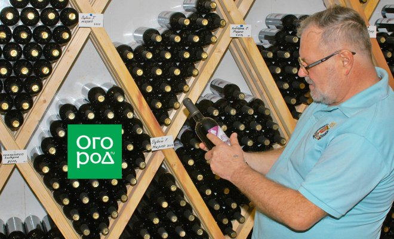
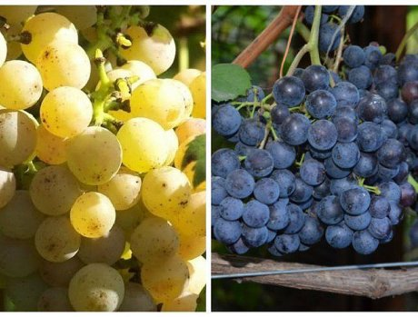
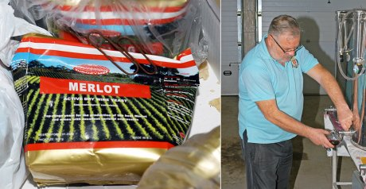
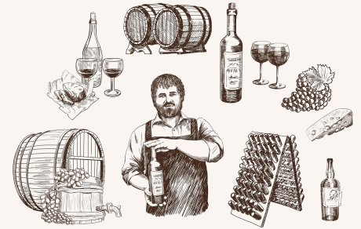
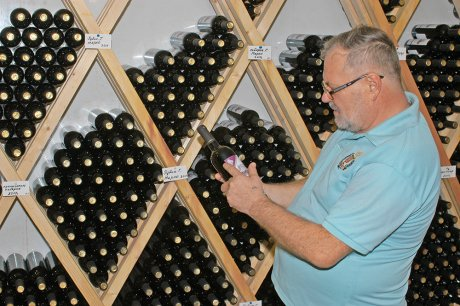

Возможно ли сделать в средней полосе домашнее (дачное) вино, сопоставимое по качеству с таковым из сортов, выращенных на юге? К сожалению, достойный аналог получить трудно, почти невозможно. Но давайте попытаемся разобраться, что можно сделать для исправления ситуации.
Причина неудач с домашним виноделием в наших широтах проста: классические сорта винограда (а это в основном "французы" – Каберне Совиньон, Каберне Фран, Мерло, Сира, группа Пино, Шардоне и др.) имеют срок созревания от 140 до 160 дней и требуют для полноценной вегетации САТ (сумма активных температур) не менее 3300-3500°С, в то время как в средней полосе России от силы набирается 2100°С.
Так что же, довольствоваться "старой доброй" изабеллой (кстати, запрещенной в промышленном виноделии ЕС якобы из-за повышенного содержания метанола)? К счастью, проблемой альтернативных сортов и гибридов для северного виноградника озаботился еще столетие назад наш великий соотечественник Иван Владимирович Мичурин.
Какие сорта рекомендуют виноградари-виноделы с опытом?

Одним из самых удачных морозостойких гибридов винограда по праву считается Мускат донской, выведенный в конце 1940-х в знаменитом ВНИИВиВ имени Я.И. Потапенко. Этот сорт – прямой потомок мичуринской селекции, точнее говоря," внук" Сеянца Маленгра и Амурского, с одной стороны и Муската белого с другой. По неприхотливости к условиям выращивания, плодовитости и яркому мускатному вкусу ему до сих пор нет равных. Когда в 1967 году посольство СССР подарило Ботаническому саду в Осло несколько морозостойких сортов винограда, именно Мускат донской прижился в южной Норвегии лучше всего и даже стал вполне коммерческим, то есть и поныне продается в небольших винных лавках.
Из шедевров советской и российской селекции нужно отметить сорт Адель, универсальный европейско-амурский гибрид, выведенный селекционерами А.И. Васьковским и П.А. Чебукиным. Этот черный виноград выдерживает морозы до –30°С и отличается крупной гроздью.
Таежный приятен своим легким мускатным ароматом, ему под стать Оленьевский черный селекции А.И. Потапенко, Дальневосточный и Олеся дальневосточная, выведенные Дмитрием Новиковым. За гибридами Брускам (ВНИИВиВ имени Я.И. Потапенко) и Экспресс (селекция А.И. Васьковского) сегодня охотятся все серьезные виноградари-виноделы, выделяют им лучшие места на своих небольших участках, причем винные лозы отвоевывают места не только у столовых сортов, но у яблонь и других плодовых деревьев, затеняющих посадки.
Стоит особо отметить и сорт Саперави (правда, прямое родство со знаменитым грузинским сортом не доказано), дающий, возможно, самые насыщенные и танинные вина в условиях северного виноградника.
За последние 15-20 лет в России неплохо прижились и вызывают все больший интерес европейские гибриды, такие как Бианка и Кристалл из Венгрии (выдерживает до –27°С), немецкие Солярис и Каберне Кароль (–24°С), Леон Мийо и Маршал Фош из Франции (–29°С и –40°С), чешский Рондо с амурскими "кровями" (–24°С), Каберне Нуар из Швейцарии, Фронтиньяк и Ла Креснт из США и др.
Вышеназванные сорта – лишь малая часть проверенных технических и универсальных сортов. Наверняка, виноградари назовут своих любимцев. Так что о вкусах спорить не будем, рассмотрим основные этапы производства вина в домашних (дачных) условиях.
Основные этапы производства домашнего вина

Опытные виноделы настоятельно рекомендуют для домашнего виноделия использовать коммерческие винные дрожжи, которые можно приобрести в специализированных магазинах или на сайтах. При соблюдении определенных условий они гарантируют протекание процесса сбраживания в нужном режиме. Проще говоря, переработают сахара в спирт насухо и до нужной крепости.
Зачастую дикие дрожжи, то есть те расы грибков, что живут на кожице и гребнях винограда, начав ферментацию, в какой-то момент уступают "поле боя" бесполезным и даже вредным штаммам. Самый частый недостаток такого вина – недоброд, то есть в какой-то момент сусло перестает играть и постепенно образуется пленка – признак другого, порочного брожения. Для того чтобы отсечь размножение ненужных штаммов, в сусло добавляют диоксид серы. Как правило, правильные дрожжи не боятся сульфитации, в то время как вредоносные гибнут.
Если вы принципиально отвергаете коммерческие дрожжи или их трудно приобрести, то есть смысл подумать о приготовлении закваски. Она поможет диким дрожжам стартовать с удвоенной силой и, возможно, процесс брожения пройдет успешно. Для приготовления закваски дачники обычно используют имеющиеся в наличие фрукты и ягоды, особым почтением пользуется малина, но ради чистоты "жанра" лучше все же отказаться от всего, кроме винограда. Примерно за неделю до сбора нужно набрать 1-2 кг самых спелых ягод, раздавить их в стеклянной или эмалированной чашке, добавить ложку-другую сахарного песка, накрыть неплотной крышкой или марлей и поставить в теплое место.
Особо подчеркнем, что виноград ни для закваски, ни для вина не моется! По этой же причине не стоит собирать виноград сразу после дождя. За несколько сухих дней на ягодах восстановится слой "диких" микроорганизмов, участвующих в брожении.
В профессиональном виноделии период сбора связан с таким понятием, как "техническая зрелость ягод", которая определяется соотношением содержания сахаров и кислотности, а также степенью зрелости кожицы и семян. Все показатели измеряются специальными приборами в полевых или лабораторных условиях. Опытные виноделы степень зрелости определяют на вкус. Они также советуют начинать сбор на первой стадии перезрелости, то есть когда кожица слегка размягчается (это способствует более легкому переходу красящих веществ, или антоцианов в сок), а косточки становятся коричневыми. К сожалению, в условиях средней полосы энологическая зрелость винограда наступает редко, то есть винифицировать приходится слегка недозрелый виноград. Добавлением сахара букет не улучшить, поэтому нет большого смысла и в искусственном повышении спиртуозности. Повысить уровень сахаров в ягодах можно путем их частичной усушки. Для этого гроздь осторожно перекручивают прямо на лозе, тем самым перекрывая поступление влаги от корней, либо срезанные грозди несколько дней подвяливают на сквозняке чердачного помещения. Именно так, кстати, делают знаменитые итальянские вина речото (сладкое) и амароне (сухое).

Итак, сбор прошел, гора ягод ждет дальнейших действий. На этой стадии нужно решить, какое вино вы хотите получить: полнотелое и насыщенное или легкое, цветочно-фруктовое. Для первого случая ягоды давят вместе с гребнями и полученную массу настаивают нескольких дней, в зависимости от степени желаемой терпкости и окрашенности. Отжимать грозди целиком не стоит, если гребни не одревеснели, т.е. не стали коричневыми и суховатыми. Зеленоватые гребни могут передать суслу травянисто-горький привкус и полностью испортить букет. В общем, чтобы не рисковать, ягоды лучше оборвать, заодно очищая их от сора (листьев, веточек, насекомых).
В профессиональном виноделии мацерацию (вымачивание на мезге) проводят при пониженной температуре (в среднем 15°С), тем самым не допуская активного брожения и разогрева сусла. Особенно это важно для белых сортов, т.к. холодное настаивание на мезге способствует переходу в сусло тонких цветочных и минеральных оттенков, которые при высокой температуре могут, что называется, "свариться". В домашних условиях температуру забродившего сусла снижают с помощью пластиковых бутылок с замороженной водой. Их либо опускают прямо в сусло, либо обкладывают емкости снаружи.
Для получения розового вина из темного винограда вымачивание на мезге длится 2-3 часа, за это время часть красящих веществ из кожицы перейдет в сок.
Желающим делать вино по науке, следует обзавестись ареометром (виномером). Этот прибор поможет следить за сахаронакоплением в ягодах, определиться с днем сбора, затем после дробления ягод измерить общий сахар в сусле и решить, проводить подслащивание или нет.
Вообще, добавление свекольного сахара в сусло для повышения спиртуозности будущего вина – тема довольно неоднозначная. Шаптализация разрешена в профессиональном виноделии, к примеру, в самых северных зонах Европы допускается обогащать вино на 3,5 об. %, в Бордо и Бургундии – на 2 об. %, чем активно и пользуются в неурожайный год. У нас, в средней полосе, сахаристость сусла в среднем равна 18-19%, что соответствует крепости 10-10,5%. Если для легкого варианта белого и розового вина этого вполне достаточно, то для красного вина нижний ориентир начинается с 12%. По таблице расчета крепости выброженного вина можно определить количество добавляемого сахара. Речь идет о сухом вине. Соответственно, для получения полусухого, полусладкого или сладкого вина сахара нужно добавлять больше.
Сбраживание сусла протекает в бутылях, оснащенных водяным затвором. Сам процесс общеизвестен и особых комментариев не требует. После того как дрожжи отыграют, молодое вино снимают с осадка и ставят на несколько месяцев в холодное место, после чего вино, осветленное естественным образом, снова сливают с осадка и при желании разливают по бутылкам.

Как правило, домашнее вино хорошо хранится до следующего урожая. При желании же сделать вино с потенциалом хранения от трех до пяти лет и более придется подойти к процессу более основательно и обзавестись некоторым профессиональным оборудованием, как это сделал Игорь Кузьмин из Павловского посада (на фото выше). Он оборудовал часть своего загородного дома под винодельню и энотеку, закупил стальные емкости и дубовые бочки краснодарского производства. На своих 25 сотках этот увлеченный человек выращивает 265 сортов винограда – часть урожая идет на вино, часть – на производство бренди. Игорь Кузьмин делает вина, в том числе игристые, как из своего винограда, так из южного, который он закупает напрямую у таманских фермеров. В своем подмосковном "шато" он винифицирует, выдерживает и разливает авторские вина в бутылки, оформляет их по всем правилам современного виноделия. В его личной коллекции – несколько сот бутылок пяти последних винтажей.
В планах Игоря Кузьмина сделать сладкие вина из мускатных сортов и классический портвейн. Конечно, это уже не дачный уровень, но он показывает, чего можно добиться за пять-семь лет увлечения виноградной лозой. Сегодня бывший строитель Игорь Кузьмин называет свою жизнь творческой, и вкус его вина, пожалуй, подтверждает эти слова пусть не на 100 баллов, но на 80-85 точно, а это уже дорогого стоит.
А занимаетесь ли вы домашним виноделием? Если да – существуют ли у вас какие-либо секреты этого увлекательного дела?